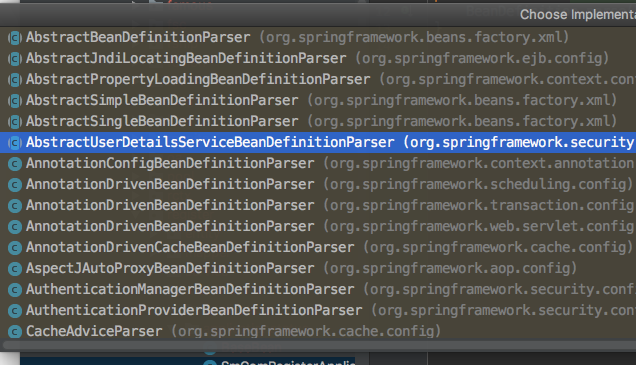

转行开始安卓了，以前做运维的很多技能都用不着了，但是开发这个东西，还是需要经验和技术的积累。比如说什么 Spring,Mybatis,bootstrap等等，以前只接触服务端开发，压根就不知道这些东西啊。正好，让我们从jeeplus这个公司大佬用着的框架来熟悉一下。
工作流程简述
转自：Spring MVC工作流程图
流程图

UML图

简要描述
- 用户向服务器发送请求，请求被Spring 前端控制Servelt DispatcherServlet捕获；
- DispatcherServlet对请求URL进行解析，得到请求资源标识符（URI）。然后根据该URI，调用HandlerMapping获得该Handler配置的所有相关的对象（包括Handler对象以及Handler对象对应的拦截器），最后以HandlerExecutionChain对象的形式返回；
- DispatcherServlet 根据获得的Handler，选择一个合适的HandlerAdapter。（附注：如果成功获得HandlerAdapter后，此时将开始执行拦截器的preHandler(…)方法）
- 提取Request中的模型数据，填充Handler入参，开始执行Handler（Controller)。 在填充Handler的入参过程中，根据你的配置，Spring将帮你做一些额外的工作：
- HttpMessageConveter： 将请求消息（如Json、xml等数据）转换成一个对象，将对象转换为指定的响应信息
数据转换：对请求消息进行数据转换。如String转换成Integer、Double等
数据格式化：对请求消息进行数据格式化。 如将字符串转换成格式化数字或格式化日期等
数据验证： 验证数据的有效性（长度、格式等），验证结果存储到BindingResult或Error中
- Handler执行完成后，向DispatcherServlet 返回一个ModelAndView对象；
- 根据返回的ModelAndView，选择一个适合的ViewResolver（必须是已经注册到Spring容器中的ViewResolver)返回给DispatcherServlet ；
- ViewResolver 结合Model和View，来渲染视图
- 将渲染结果返回给客户端。
DispatcherServlet
这个在 web.xml文件内进行了定义：
<servlet>
<servlet-name>springServlet</servlet-name>
<servlet-class>org.springframework.web.servlet.DispatcherServlet</servlet-class>
<init-param>
<param-name>contextConfigLocation</param-name>
<param-value>classpath*:/spring/spring-mvc*.xml</param-value>
</init-param>
<load-on-startup>1</load-on-startup>
</servlet>
|
其会加载 spring/spring-mvc* 这几个文件。具体而言，就是 spring-mvc.xml这个文件，这个文件定义了很多的接口，资源。比如 handler, converter, Resolver等等。
handlerMapping
具体的代码并不是很清晰，但网络上的文章足以让我们有一个概括的认识：springMVC—4种映射处理器handlerMapping。
我们使用的jeePlus使用的是 注解来进行映射的，<mvc:annotation-driven/>标签，即声明了对于注解的支持。关于这个标签的更多信息，请参考Spring MVC 解读——
<mvc:annotation-driven content-negotiation-manager="contentNegotiationManager">
<mvc:message-converters register-defaults="true">
<bean class="org.springframework.http.converter.StringHttpMessageConverter">
<constructor-arg value="UTF-8"/>
</bean>
<bean class="org.springframework.http.converter.json.MappingJackson2HttpMessageConverter">
<property name="supportedMediaTypes">
<list>
<value>application/json;charset=UTF-8</value>
</list>
</property>
<property name="prettyPrint" value="false"/>
<property name="objectMapper">
<bean class="com.jeeplus.core.mapper.JsonMapper"></bean>
</property>
</bean>
<bean class="org.springframework.http.converter.xml.MarshallingHttpMessageConverter">
<constructor-arg>
<bean class="org.springframework.oxm.xstream.XStreamMarshaller">
<property name="streamDriver">
<bean class="com.thoughtworks.xstream.io.xml.StaxDriver"/>
</property>
<property name="annotatedClasses">
<list>
<value>com.jeeplus.core.persistence.BaseEntity</value>
</list>
</property>
</bean>
</constructor-arg>
<property name="supportedMediaTypes" value="application/xml"></property>
</bean>
</mvc:message-converters>
</mvc:annotation-driven>
|
上文中提到，mvc的所有自定义命名空间（如 mvc, context），都是以BeanDefinitionParser接口的实现来解析的。这个接口，有多个实现：

这是为了在不同的命令空间下进行解析，我们现在关注的是org.springframework.web.servlet.config.AnnotationDrivenBeanDefinitionParser。具体的代码，不关注，我只想要了解有这么一回事就行了。
在 上面类的 parse() 方法中，做了很多的事情，但我所关心的是，其中一句代码：MvcNamespaceUtils.registerDefaultComponents(parserContext, source); 注册了一些默认的组件。
public static void registerDefaultComponents(ParserContext parserContext, Object source) {
registerBeanNameUrlHandlerMapping(parserContext, source);
registerHttpRequestHandlerAdapter(parserContext, source);
registerSimpleControllerHandlerAdapter(parserContext, source);
}
|
其中，似乎第一个就是进行 url 与 handler相映射的注册。
我们可以这样理解，在mvc框架启动的过程中，启动了服务 DispatchServlet，然后还注册了很多的handlerMapping。当然，用注解来进行，url <-> 方法的映射。
doServcie()/doDispatch()
这两个方法会根据请求数据，解析后找到 handlerMapping，然后根据 url 找到方法，直接调用即可。
protected void doDispatch(HttpServletRequest request, HttpServletResponse response) throws Exception {
HttpServletRequest processedRequest = request;
HandlerExecutionChain mappedHandler = null;
boolean multipartRequestParsed = false;
WebAsyncManager asyncManager = WebAsyncUtils.getAsyncManager(request);
try {
try {
ModelAndView mv = null;
Object dispatchException = null;
try {
processedRequest = this.checkMultipart(request);
multipartRequestParsed = processedRequest != request;
mappedHandler = this.getHandler(processedRequest);
if (mappedHandler == null || mappedHandler.getHandler() == null) {
this.noHandlerFound(processedRequest, response);
return;
}
HandlerAdapter ha = this.getHandlerAdapter(mappedHandler.getHandler());
String method = request.getMethod();
boolean isGet = "GET".equals(method);
if (isGet || "HEAD".equals(method)) {
long lastModified = ha.getLastModified(request, mappedHandler.getHandler());
if (this.logger.isDebugEnabled()) {
this.logger.debug("Last-Modified value for [" + getRequestUri(request) + "] is: " + lastModified);
}
if ((new ServletWebRequest(request, response)).checkNotModified(lastModified) && isGet) {
return;
}
}
if (!mappedHandler.applyPreHandle(processedRequest, response)) {
return;
}
mv = ha.handle(processedRequest, response, mappedHandler.getHandler());
if (asyncManager.isConcurrentHandlingStarted()) {
return;
}
this.applyDefaultViewName(processedRequest, mv);
mappedHandler.applyPostHandle(processedRequest, response, mv);
} catch (Exception var20) {
dispatchException = var20;
} catch (Throwable var21) {
dispatchException = new NestedServletException("Handler dispatch failed", var21);
}
this.processDispatchResult(processedRequest, response, mappedHandler, mv, (Exception)dispatchException);
} catch (Exception var22) {
this.triggerAfterCompletion(processedRequest, response, mappedHandler, var22);
} catch (Throwable var23) {
this.triggerAfterCompletion(processedRequest, response, mappedHandler, new NestedServletException("Handler processing failed", var23));
}
} finally {
if (asyncManager.isConcurrentHandlingStarted()) {
if (mappedHandler != null) {
mappedHandler.applyAfterConcurrentHandlingStarted(processedRequest, response);
}
} else if (multipartRequestParsed) {
this.cleanupMultipart(processedRequest);
}
}
}
|
其简单的过程，就是通过 request 来获取 handler，然后根据 hanlder 获取 handlerAdapter，最后，把请求交给 mv = ha.handle(processedRequest, response, mappedHandler.getHandler());
唉，就到这吧，有空专心研发的时候再仔细看看呢。